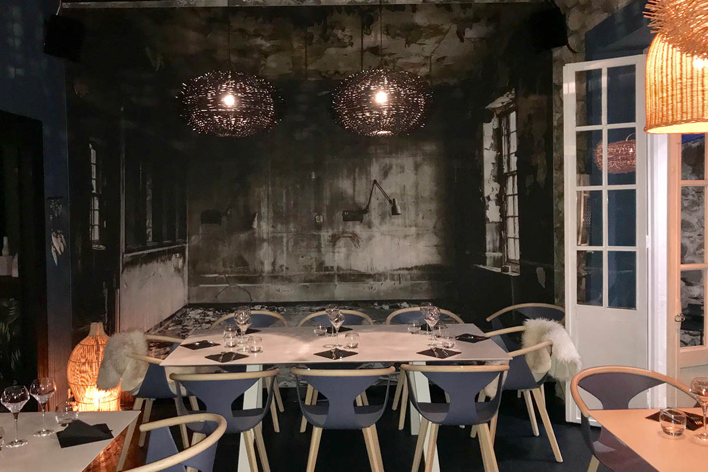
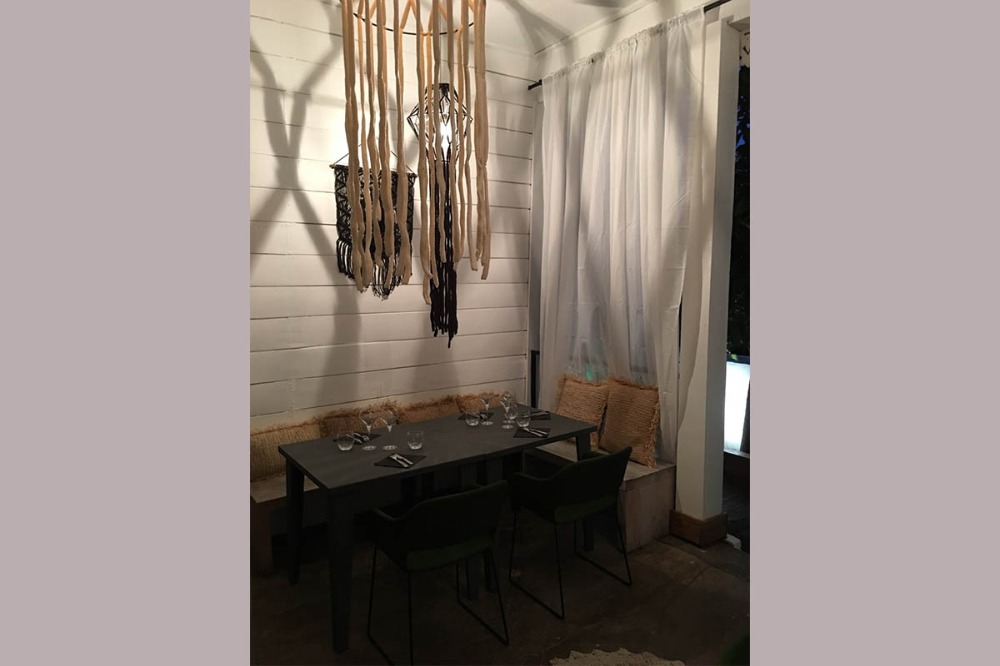
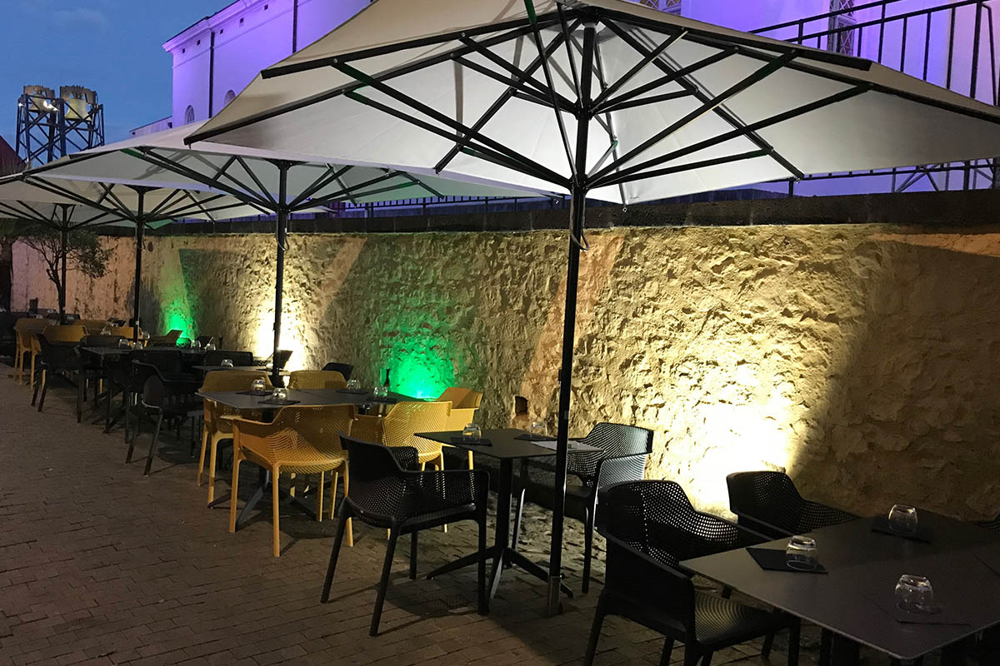

5 ruelle Edouard. Du mardi au samedi, midi et soir.
Réserver une tableLa Crêperie Saint Georges se tient au 5 ruelle Edouard, face à la cathédrale de Saint-Denis. On y entre par une façade discrète ; la salle, elle, prend son temps — bois sombre, suspensions basses, tables dressées.
Le service se fait midi et soir, du mardi au samedi.


Sous les parasols, adossée au mur de pierre, la terrasse s'éclaire quand le jour tombe. C'est le même service, la même carte — simplement dehors.
Le vendredi et le samedi, le service du soir se prolonge jusqu'à 22 h 30.
Les photographies sont celles de l'établissement.
Crêperie Saint Georges
5 ruelle Edouard
97400 Saint-Denis
Face à la cathédrale
| mardi | 11 h 45 – 14 h 00 18 h 45 – 22 h 00 |
| mercredi | 11 h 45 – 14 h 00 18 h 45 – 22 h 00 |
| jeudi | 11 h 45 – 14 h 00 18 h 45 – 22 h 00 |
| vendredi | 11 h 45 – 14 h 00 18 h 45 – 22 h 30 |
| samedi | 12 h 00 – 14 h 00 18 h 45 – 22 h 30 |
Un appel suffit. Nous vous accueillons du mardi au samedi, midi et soir.
02 62 21 59 09